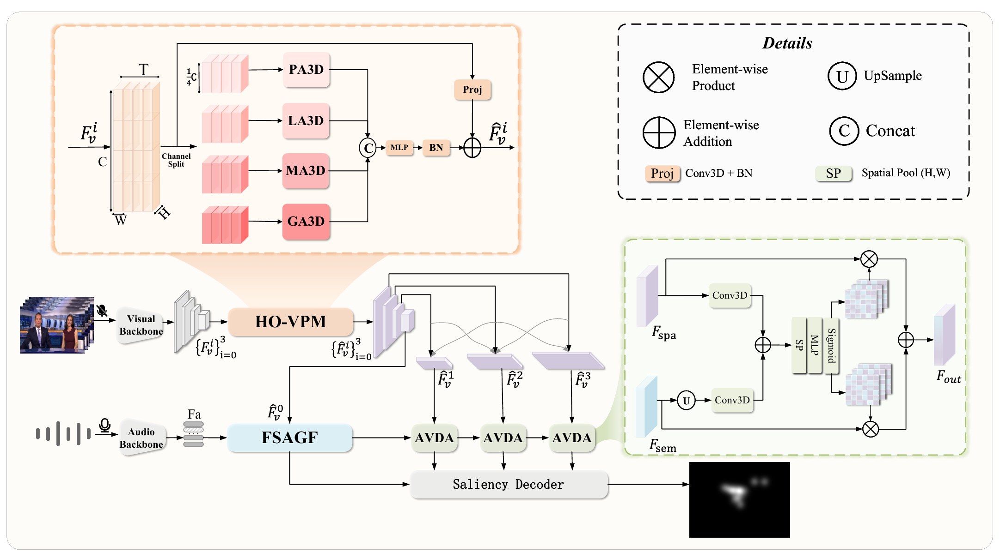
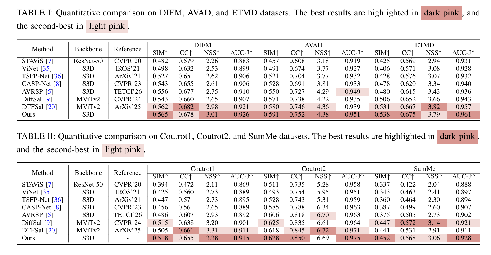
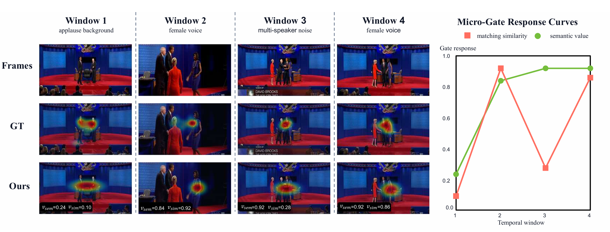

FOSal: Fine-grained Semantic Auditory Guidance and Omni-scale Visual Perception for Audio-Visual Saliency Prediction
IEEE Transactions on Multimedia (TMM), 2026
[ Paper ]
[ Code ]
[ PDF ]
Li Yu
Wanting He
Jimin Xiao
Huihui Bai
Abstract
- grade
Audio-Visual saliency prediction (AVSP) aims to localize salient regions that attract human gaze in videos. Existing approaches commonly treat audio as a holistic signal, so mixed background noise can misguide visual attention; visual representations with fixed receptive fields also struggle to jointly capture local fleeting motion and global scene context. We propose FOSal, a Fine-grained Semantic Auditory Guidance and Omni-scale Visual Perception framework. FOSal decouples audio into latent semantic units and actively filters unreliable cues, establishes four parallel visual receptive fields from point-level to global context, and dynamically aggregates multi-scale features under semantic audio guidance. Extensive experiments on six datasets show generally superior performance across most metrics, with an average improvement of 3.4% over previous state-of-the-art results.
Highlights
- gradeFSAGF follows a decomposition-quantization-gating paradigm to retain only reliable, attention-evoking semantic audio cues and suppress environmental noise.
- gradeHO-VPM splits channels into four parallel branches, enabling point-to-global omni-scale spatiotemporal visual perception within a single module.
- gradeAVDA preserves temporal information while adaptively calibrating cross-scale fusion weights for each frame.
Network Architecture

gradeFOSal combines Hierarchical Omni-scale Visual Perception (HO-VPM), Fine-grained Semantic Auditory-guided Fusion (FSAGF), and Audio-Modulated Visual Dynamic Aggregation (AVDA).
Results


Please check the paper for complete experimental settings and results.
Citation
@article{yu2026fosal,
title={FOSal: Fine-grained Semantic Auditory Guidance and Omni-scale Visual Perception for Audio-Visual Saliency Prediction},
author={Yu, Li and He, Wanting and Xiao, Jimin and Bai, Huihui},
journal={IEEE Transactions on Multimedia},
year={2026}
}
The Paper link points to the manuscript.